PHYS598500 · Week 1 · T1A
Computation Is Physical
From Mechanized Reasoning to Quantum Hardware and the Limits of Physics
Why Must Computer Science Eventually Meet Physics?
→Because computation needs hardware.
In physics, we study:
Matter
the hardware itself
Energy–momentum transfer
how we control the hardware
State evolution
how the algorithm is encoded
Click the slide or press → to reveal one layer; press ← to hide it again.
Q1. Can Calculation and Reasoning Be Mechanized?
From Human Procedure to Symbolic State Transformation
The First Separation: Answer versus Procedure
A mathematical relation such as (f(x)=y) specifies which answer is correct. A computation additionally specifies a finite procedure that produces the answer. Mechanization begins when the procedure can be followed without further insight at each step.
Ask the class: Which part of long division requires understanding, and which part only requires obeying rules?
Once a task is expressed as explicit state transitions, a person, a gear train, a relay network, or a transistor circuit may carry out the same formal procedure.
\[\text{problem}\rightarrow\text{representation}\rightarrow\text{procedure}\rightarrow\text{state transitions}\rightarrow\text{physical execution}.\]
What Does “Mechanical Computation” Mean?
“Mechanical” does not require metal gears. It means that, once the input and rules are supplied, each next step can be determined without asking the executor for a new mathematical insight.
A human following a table, a relay circuit, a transistor processor, and a simulated Turing machine can all perform mechanical computation. Their materials differ; the relevant common structure is an explicitly specified transition from one configuration to the next.
\[\boxed{\text{current configuration}+\text{rule}\longrightarrow\text{next configuration}.}\]
| Instruction | Mechanical? | Reason |
|---|---|---|
| “Add the two digits and carry according to this table.” | Yes | The next action is completely specified. |
| “Try all divisors from 2 through \(\lfloor\sqrt N\rfloor\).” | Yes | Potentially slow, but finite and explicit. |
| “Find an elegant proof.” | No | Neither the search steps nor a stopping rule are specified. |
| “Guess a useful substitution.” | Not yet | It becomes mechanical only after a precise selection procedure is supplied. |
The Five Ingredients of a Mechanical Computation
- Representation: Which physical or symbolic states stand for the input, workspace, and output?
- Configuration: What information completely describes the machine at one instant?
- Transition rule: Given the current configuration, which next configurations are allowed?
- Control: Which rule is applied next, and can data alter that choice?
- Termination and readout: How do we recognize completion and interpret the resulting state?
For a deterministic digital machine, one may summarize a step as
\[(s_t,x_t)\mapsto(s_{t+1},y_t).\]
The symbols do not move themselves. A physical machine must encode \(s_t\) and \(x_t\), generate the transition, stabilize the result against noise, and expose \(y_t\) for later use.
Worked Example: Mechanizing Euclid's Algorithm
To calculate \(\gcd(a,b)\) for positive integers, repeat:
\[(a,b)\mapsto(b,\;a\bmod b)\]
until \(b=0\); then output \(a\). For \((a,b)=(48,18)\):
\[(48,18)\rightarrow(18,12)\rightarrow(12,6)\rightarrow(6,0),\qquad\gcd(48,18)=6.\]
No step requires the executor to understand why the algorithm works. The proof of correctness belongs to the algorithm designer; execution requires only comparison, remainder, assignment, repetition, and a stopping test.
Mechanization, Automation, and Programmability
| Concept | Meaning | Example |
|---|---|---|
| Mechanization | Express a task as explicit elementary state transitions. | Euclid's algorithm written as repeatable rules |
| Automation | Arrange for a physical system to execute those transitions with little or no intervention. | A calculator repeatedly updating registers |
| Programmability | Allow the same machine to execute different procedures by changing an encoded program. | A stored-program computer |
| Universality | Allow one model to simulate every computation in a specified class. | A universal Turing machine |
A clockwork calculator can be automatic without being general-purpose. A modern processor is programmable, but a particular program may still fail to halt. These distinctions prepare Q2: after a procedure is mechanized, we can ask what any such mechanism can compute.
Charles Babbage: From Automatic Tables to a Programmable Machine
Charles Babbage (1791–1871) first designed the Difference Engine to automate numerical tables. Finite differences reduce polynomial tabulation to repeated addition, making the task suitable for a gear-based mechanism and reducing human calculation and typesetting errors.
The later Analytical Engine was a general architecture. It separated a “store” from a “mill,” used punched cards to specify operations and data, and included sequencing, repetition, and conditional control.
| Design | Modern analogy |
|---|---|
| Store | Memory |
| Mill | Arithmetic/processing unit |
| Punched cards | Program and data input |
| Operation sequence | Control flow |
Caution: the full Analytical Engine was not completed in Babbage's lifetime.
{kind=link}
Why Mechanize Tables? Checking Still Failed
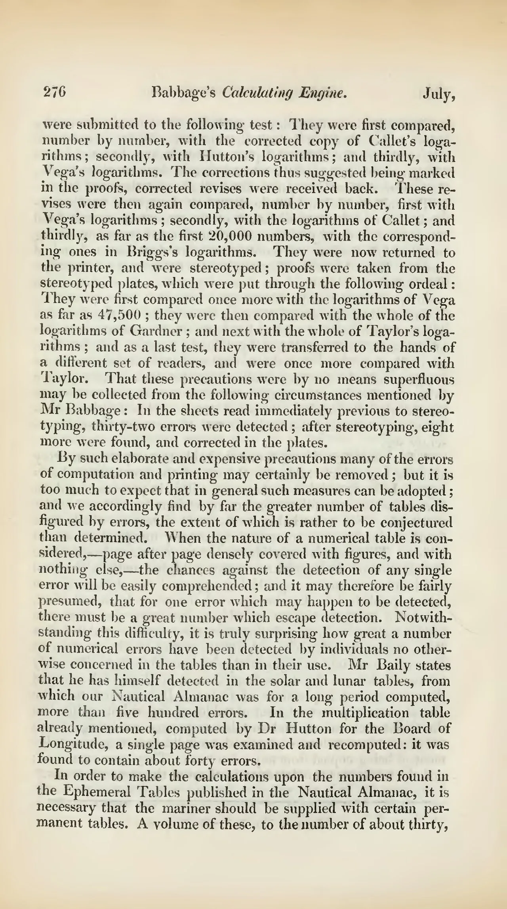
{kind=link}
{kind=link}
The Table Crisis: “Errata upon Errata”
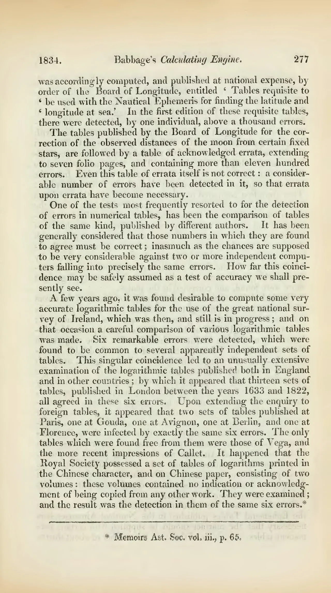
The Edinburgh Review, vol. 59 · July 1834
{kind=link}
{kind=link}
Same Page, Two Copied Errors: Hutton vs. Babbage
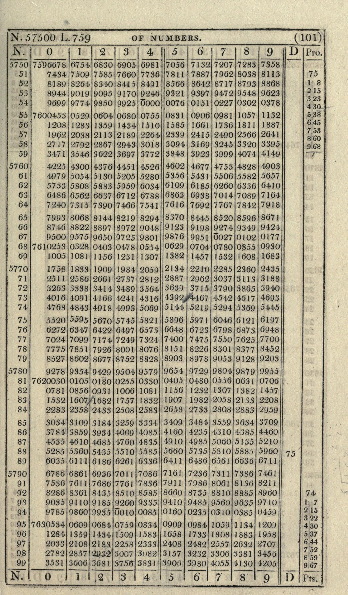
{kind=link}
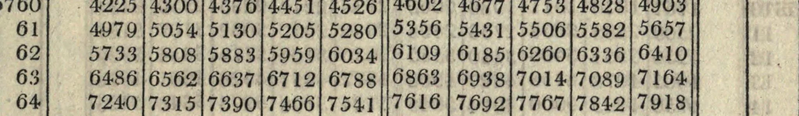
wrong57,628 → …633657,629 → …6410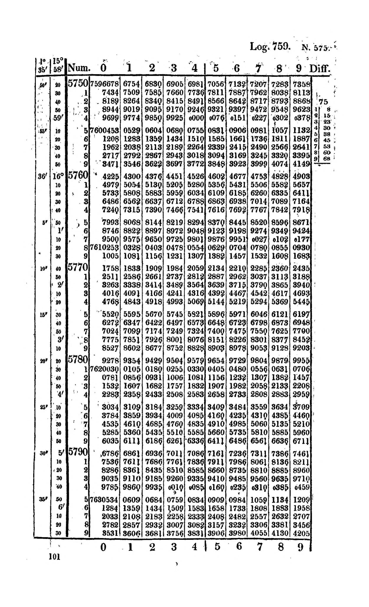
{kind=link}
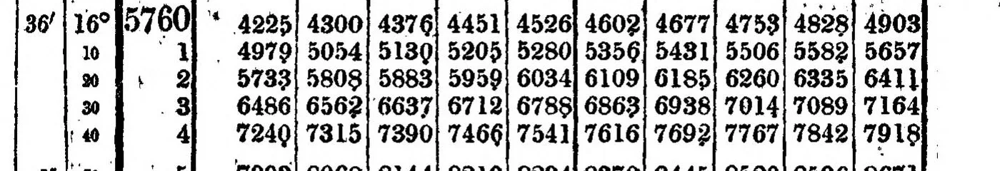
correct57,628 → …633557,629 → …6411Difference Engine No. 2: Built in Metal
{kind=link}
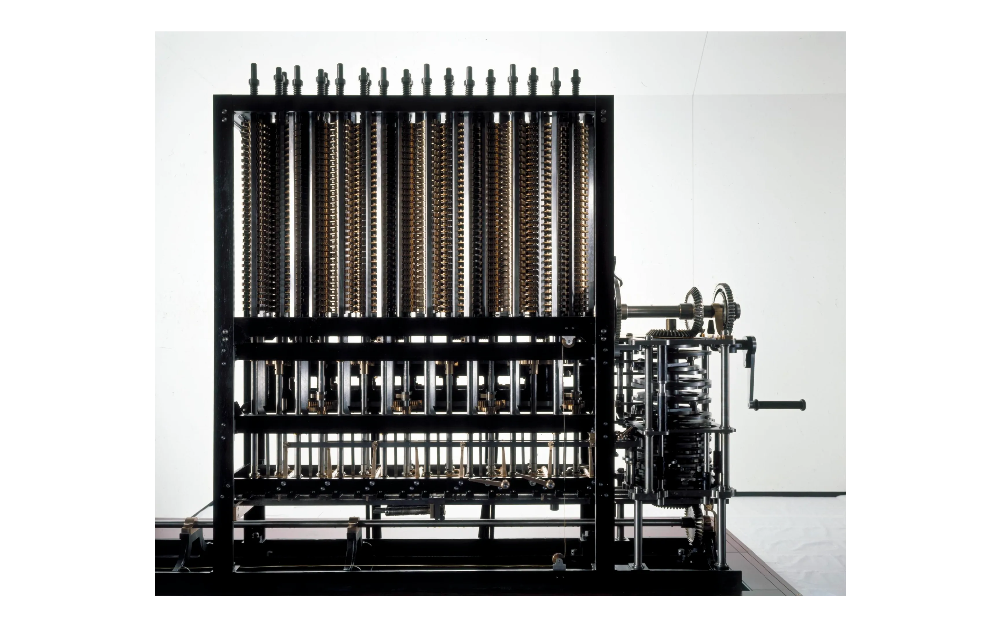
Complete
reconstruction
Ref:
Science Museum Group Collection
▲
Ref:
https://collection.sciencemuseumgroup.org.uk/objects/co62748/babbages-difference-engine-no-2-2002
拷貝.png)
Decimal figure wheels and gear
trains
Ref:
Science Museum Group Collection
▲
Ref:
https://collection.sciencemuseumgroup.org.uk/objects/co62748/babbages-difference-engine-no-2-2002
Difference Engine No. 2: From Drawings to Mechanism
{kind=link}
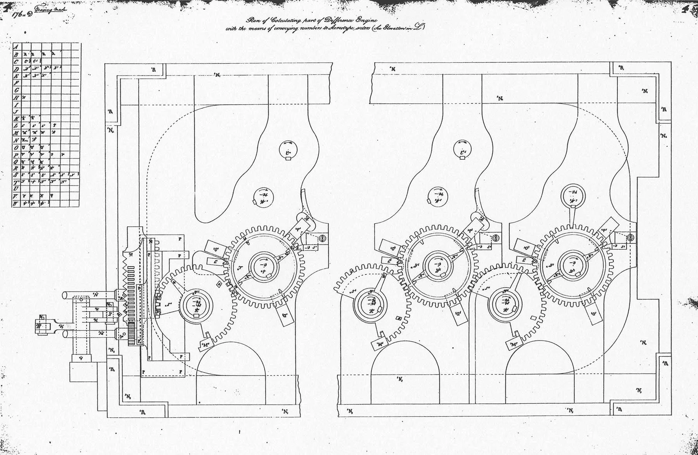
Plan of the calculating
mechanism
Ref:
Cronatec · How did the Difference Engine work?
▲
Ref:
https://cronatec.ch/how-did-the-difference-engine-work/
{kind=link}
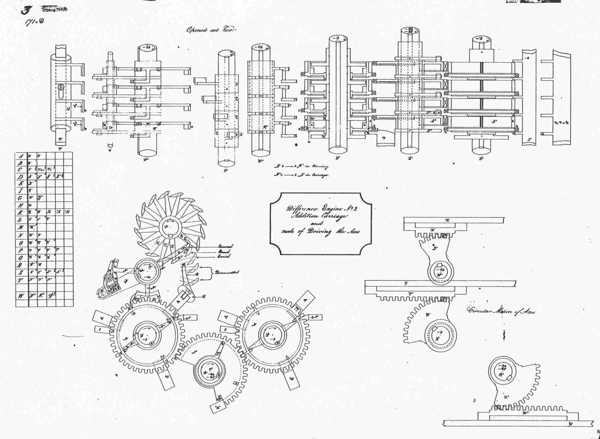
Addition and carriage
mechanisms
Ref:
Cronatec · How did the Difference Engine work?
▲
Ref:
https://cronatec.ch/how-did-the-difference-engine-work/
Why the Analytical Engine Was a Conceptual Breakthrough
The Difference Engine mechanized a specialized mathematical task. The Analytical Engine asked a deeper question: can the same machine perform many tasks when its sequence of operations is changed?
\[\boxed{\text{fixed-purpose mechanism}\rightarrow\text{programmable general-purpose architecture}.}\]
This anticipates three distinctions that remain essential:
- Machine: the physical system and its available elementary operations.
- Program: an encoded sequence that selects and organizes those operations.
- Data: the encoded objects on which the operations act.
Babbage did not build a functioning modern computer, and the Analytical Engine was not a Turing machine formulated a century early. Its importance is architectural: it made programmable, automatic symbolic procedure imaginable as a machine design.
Analytical Engine: Mechanism and Punched-Card Control
{kind=link}
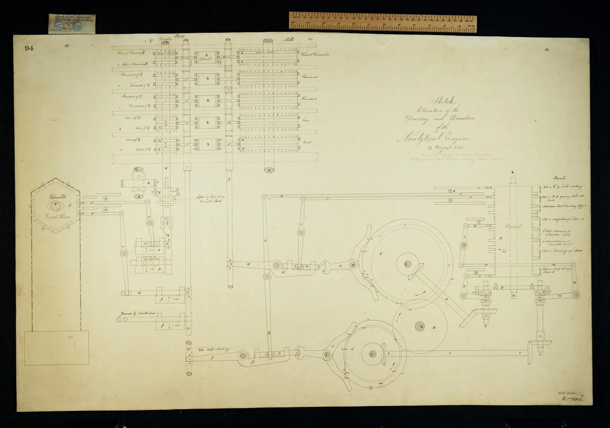
Ref: Science Museum Group Collection
{kind=link}
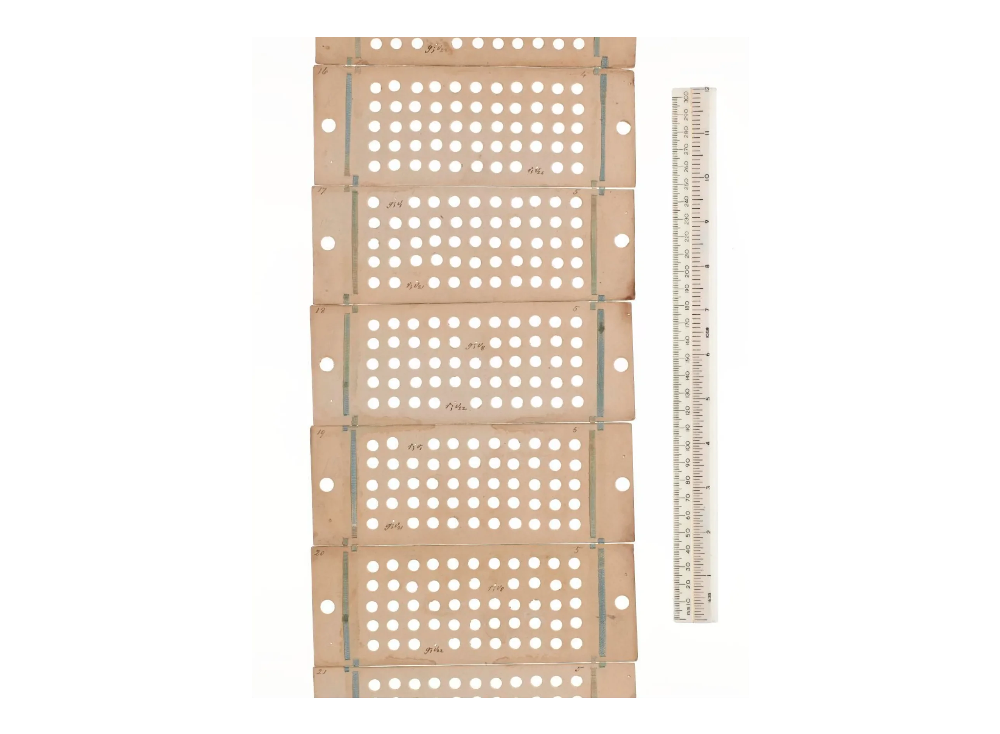
Ref: Science Museum Group Collection
Ada Lovelace: Her Contribution, Precisely
Publication and analysis: Ada Lovelace (1815–1852) translated Luigi Menabrea's account and added Notes A–G—the most extensive contemporary published explanation of how the Engine could be directed.
Machine-directed algorithm: she expressed a complete procedure as ordered operations, variables and storage locations, intermediate states, sequencing, and repetition—the form required for machine execution.
Machine–program distinction: the mechanisms provide general operations; an encoded card sequence determines the particular procedure and data flow.
General account of computation: formally represented relations could be subjected to rule-governed symbolic manipulation, extending the idea of automatic calculation.
{kind=link}
Two Lines Converge into the Modern Computer
A conceptual map of converging ideas—not a claim of one linear chronology or direct personal influence.
Boole: Logic Becomes Algebra
George Boole was not designing a computer. His contribution was to show that logical relations could be represented by symbols and transformed according to algebraic rules.
For Boolean variables \(a,b\in\{0,1\}\):
\[a\land b,\qquad a\lor b,\qquad\neg a.\]
For example, “the machine starts only if a key is present and the button is pressed” becomes
\[\mathrm{start}=\mathrm{key}\land\mathrm{button}.\]
This separates the logical relation from the material that represents it. The same Boolean expression may later be realized using relays, vacuum tubes, transistors, fluidic valves, or other two-state devices.
Boole supplied a language for logic, not the engineering bridge to digital circuits. That bridge arrives with switching theory.
{kind=link}
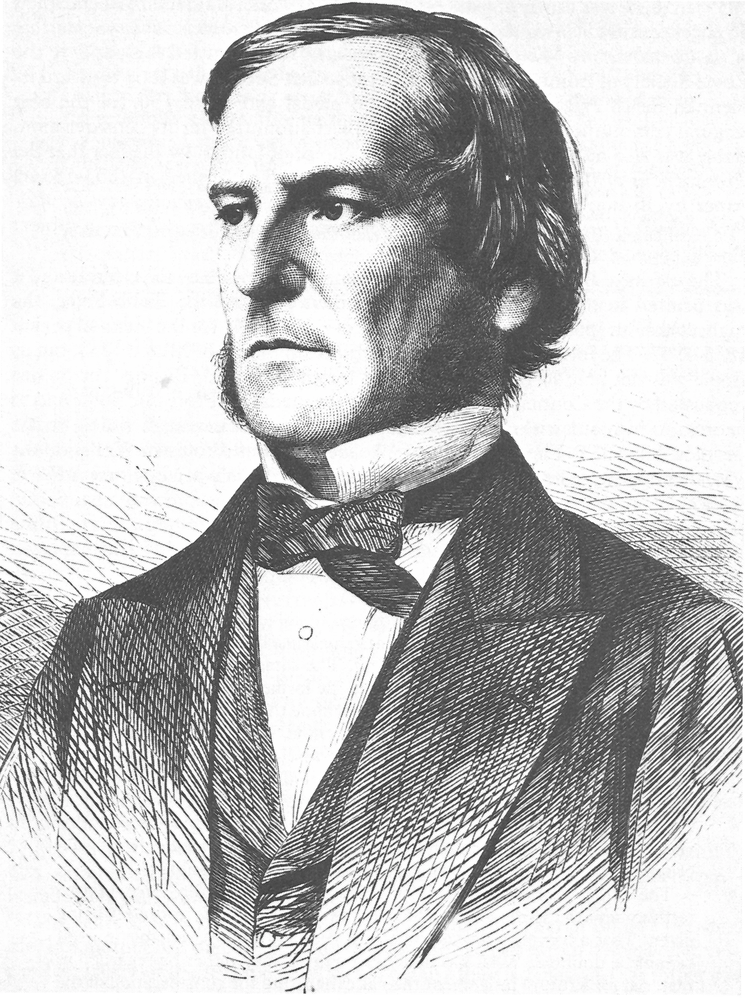
George Boole
Ref:
Wikipedia
Shannon: Boolean Algebra Becomes Switching-Circuit Design
Claude Shannon (1916–2001) showed that relay switching networks could be analyzed and synthesized using Boolean algebra. A relay contact supplies two distinguishable states that may encode \(0\) and \(1\).
| Connection | Boolean operation |
|---|---|
| Normally open contacts in series | \(a\land b\) |
| Contacts in parallel | \(a\lor b\) |
| Normally closed contact controlled by \(a\) | \(\neg a\) |
\[\boxed{\text{Boolean expression}\longleftrightarrow\text{switching network}.}\]
This made circuit design systematic: formulate a truth table, derive and simplify a Boolean expression, then construct a switching network with the same relation.
.jpg){kind=link}
Logic Gates Implement Boolean Functions
{kind=link}
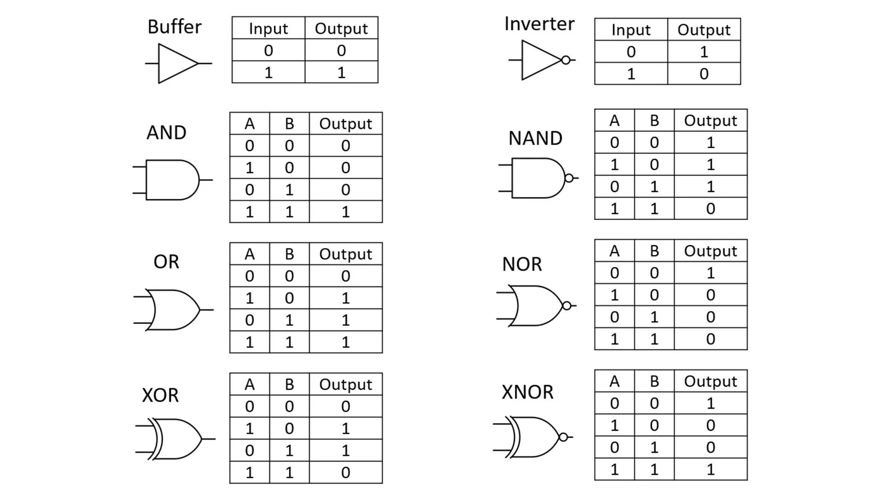
A physical switch, relay, or transistor realizes the same Boolean relation.
\[\mathrm{NOT}:a\mapsto\neg a\]
\[\mathrm{AND}:(a,b)\mapsto a\land b\]
Gates become useful when their outputs are composed into a larger circuit.
{kind=link}
{kind=link}
Half adder: AND → Carry; XOR → Sum
Sources: logic gates · half adder.
NAND and NOR Are Universal
A universal gate set can express every Boolean function.
- \(\{\mathrm{AND},\mathrm{NOT}\}\) is universal.
- \(\{\mathrm{OR},\mathrm{NOT}\}\) is universal.
- \(\{\mathrm{NAND}\}\) alone is universal.
- \(\{\mathrm{NOR}\}\) alone is universal.
{kind=link}
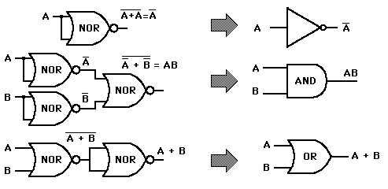
Universal means functionally complete—not that one gate is physically optimal for every circuit.
Source: HyperPhysics, NOR Gate.
Worked Bridge: From Addition to a Boolean Circuit
A half adder accepts two bits and returns the ordered pair \((\mathrm{Carry},\mathrm{Sum})\):
| \(a\) | \(b\) | carry \(c\) | sum \(s\) |
|---|---|---|---|
| 0 | 0 | 0 | 0 |
| 0 | 1 | 0 | 1 |
| 1 | 0 | 0 | 1 |
| 1 | 1 | 1 | 0 |
The truth table gives
\[c=a\land b,\qquad s=a\oplus b.\]
Thus arithmetic meaning has been translated into a binary representation, then into Boolean functions, and finally into XOR and AND switching networks.
Carry Makes Multi-Bit Addition a Sequential Architecture Problem
A full adder also accepts the previous column's carry \(c_i\):
Its ordered output is \((\mathrm{Carry},\mathrm{Sum})=(c_{i+1},s_i)\):
\[c_{i+1}=(a_i\land b_i)\lor\left[c_i\land(a_i\oplus b_i)\right].\]
\[s_i=a_i\oplus b_i\oplus c_i.\]
Connecting full adders produces a ripple-carry adder:
\[c_0\rightarrow\mathrm{FA}_0\rightarrow c_1\rightarrow\mathrm{FA}_1\rightarrow\cdots\rightarrow c_n.\]
This single example combines all the historical contributions:
- mechanical procedure: add one column, save carry, move left;
- Boolean representation: express carry and sum as functions of bits;
- switching realization: implement the functions with physical gates;
- architecture: connect gates, retain state, and control their order.
One Rule across Five Layers
Consider \(y=(a\land b)\lor(\lnot c)\). It may be represented as:
- a sentence about a decision;
- a Boolean expression;
- a truth table;
- a network of AND, OR, and NOT gates;
- voltages and currents in a transistor network.
\[\boxed{\text{reasoning}\rightarrow\text{symbolic rules}\rightarrow\text{Boolean algebra}\rightarrow\text{logic circuit}\rightarrow\text{physical machine}}\]
Opening Diagnostic
At which arrow do time, energy, noise, and failure first enter? Defend your answer.
Resolution
The abstract layers do not assign numerical energy or error costs, but every executable representation already assumes a physical carrier. The costs become explicit at implementation; they were never absent. This distinction—formal equivalence versus physical cost—will recur in every quantum-computing model.
Transition: If reasoning can be decomposed into mechanical steps, can every well-posed question be solved by some machine?
Boolean Algebra as a Representation of Decisions
For \(a,b\in\{0,1\}\), Boolean operations satisfy identities that permit symbolic simplification:
\[a\land1=a,\quad a\lor0=a,\quad a\lor(a\land b)=a,\quad \neg(a\land b)=\neg a\lor\neg b.\]
The importance is not that nature “thinks in Boolean algebra.” It is that logical propositions can be encoded into a finite algebra whose operations can be mapped to devices with two distinguishable states.
Worked Simplification
Show that \((a\land b)\lor(a\land\neg b)=a\) by algebra, truth table, and a circuit whose two branches recombine. The three representations have identical semantics but different physical costs.
Worked Example: A One-Bit Full Adder
Inputs \(a,b,c_{\mathrm{in}}\) produce
\[s=a\oplus b\oplus c_{\mathrm{in}},\qquad c_{\mathrm{out}}=(a\land b)\lor(c_{\mathrm{in}}\land(a\oplus b)).\]
At the semantic layer this is integer addition. At the circuit layer it is XOR/AND/OR. At the CMOS layer each logical operation expands into transistors, capacitances, delays, and switching energy. At the architecture layer many adders form an arithmetic unit, but carry propagation introduces a depth cost.
Q2. What Can a Machine Compute?
Computability, Complexity, and Universality
A Turing Machine Is a Discrete Dynamical System
Turing asked what it means to execute a procedure mechanically, independent of gears, relays, or transistors.
\[X_t=(q_t,\,i_t,\,\tau_t)\]
- \(q_t\)
- a finite internal control state
- \(i_t\)
- the memory cell currently coupled to the head
- \(\tau_t\)
- the complete tape contents
\[\delta(q_t,\tau_t[i_t])=(q_{t+1},\,b,\,d),\qquad d\in\{L,R\}.\]
One step reads the current symbol, writes \(b\), changes the control state, and moves the head one cell.
Physics translation: \(X_t\) is the state, \(\delta\) is a local update law, and the computation is the trajectory \(X_0\to X_1\to X_2\to\cdots\).
{kind=link}
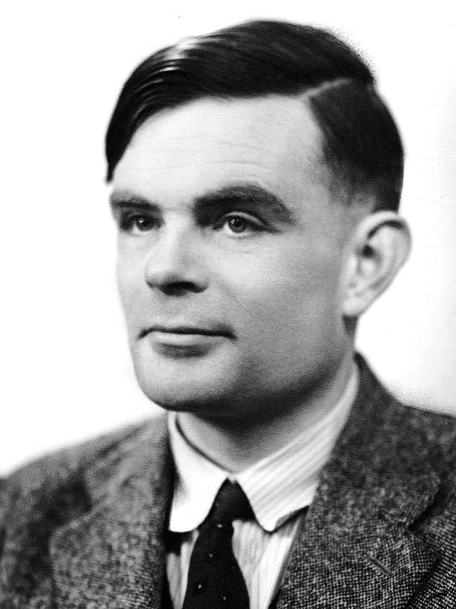
Source: Turing (1936) · portrait: Wikipedia.
Interactive One-Bit Arithmetic Machine (Turing-Machine-Inspired)
Type directly on the tape. The start marker is #; the next two cells accept 0 or 1; the
following cell accepts + or *. Then press Run. The head reads
+ and follows the addition/half-adder path; it reads * and follows the
binary multiplication (AND) path.
Current stateqStart
Head actionRead
Read symbol1
Remembered bitsA=— · B=— · OUT=—
Step / result0 / —
Half-adder circuit
qStartReada=□ · b=□▼
9 named control states
qStart, qReadA, qReadB, qReadOp, qAdd, qMul, qWrite, qReturn, qHalt
This compact teaching machine has 9 named control states. It shows every Read, Write, Move Left, Move Right, and Halt action; after writing the result, the head returns to #.
Strict Transition-Table Turing Machine
This version has no arithmetic register and no hidden AND/XOR calculation. The finite state name remembers the bits already read, and every step is selected only by the current state and scanned tape symbol.
Current transition
\(\delta(q_{Start},\#)=(q_{ReadA},\#,R)\)
23 finite-control states · only L/R moves · no A/B registers
qStartReadystate stores memory▼
State-encoded memory examples
qA0, qA1, qA0B0, qA0B1, qA1B0, qA1B1
The return path uses position-encoded states. Its final transition moves left from the A cell onto # and enters qHalt; qHalt has no outgoing transition.
Universal Turing Machine
{kind=link}
- Read the encoded state and scanned symbol of \(M\).
- Find the matching rule inside \(\langle M\rangle\).
- Update the encoded tape, head position, and state.
- Repeat until the simulated machine halts.
\[U(\langle M\rangle,x)=M(x)\quad\text{when }M(x)\text{ halts}\]
Key distinction: \(U\)'s hardware rule never changes. The description of the machine being simulated is data on the tape.
Universal does not mean simultaneous or fast. It means that an encoding exists and the fixed machine can reproduce the other machine's computation, possibly with overhead.
Three Questions That Must Not Be Confused
| Question | Meaning | Typical language |
|---|---|---|
| Computability | Does any terminating algorithm exist? | Computable / undecidable |
| Complexity | How do time and memory scale with input size? | (T(n)), (S(n)), efficient / intractable |
| Universality | Can one programmable model simulate all computations in a target class? | Universal machine / universal gate set |
\[\boxed{\text{Computability asks whether; complexity asks at what cost.}}\]
The Convergence into the Modern Digital Computer
| Contribution | Question answered | Modern inheritance |
|---|---|---|
| Babbage | How can one machine organize memory, operations, and control? | Programmable architecture |
| Lovelace | How can a procedure be expressed for that machine? | Programs, variables, iteration, symbolic use |
| Boole | How can logical relations become algebra? | Boolean functions |
| Turing | What is a mechanically computable procedure? | Computability and universal simulation |
| Shannon | How can Boolean functions become physical switching networks? | Digital logic design |
| Stored-program architecture | How can instructions and data inhabit electronic memory? | General-purpose electronic computers |
\[\boxed{\text{programmable architecture}+\text{formal computation}+\text{Boolean switching}+\text{stored program}.}\]
“Von Neumann architecture” is useful shorthand, but the stored-program electronic computer emerged from multiple contributors and wartime/postwar projects. Present it as a convergence, not a single-person invention.
Why the Halting Problem Is Undecidable
Assume a program \(H(P,x)\) decides whether \(P(x)\) halts. Construct \(D(P)\): if \(H(P,P)\) predicts halt, loop forever; otherwise halt. Now evaluate \(D(D)\). Either prediction contradicts the behavior that \(D\) was defined to perform.
\[D(D)\text{ halts}\iff H(D,D)=\text{does not halt}\iff D(D)\text{ does not halt}.\]
The lesson is not that ordinary programs are hopeless. It is that even a universal computer has logical limits independent of processor speed.
Quantum computation does not remove this diagonal contradiction: changing amplitudes and gates does not provide a general halting oracle.
Complexity Requires a Cost Model
Let input length be \(n\). A time bound counts elementary steps; a space bound counts simultaneously used memory. Polynomial and exponential examples are
\[T_1(n)=n^3,\qquad T_2(n)=2^n.\]
Asymptotic notation suppresses constants, but hardware feasibility cannot. A quantum resource estimate may require logical qubits, circuit depth, T count, T depth, error-correction cycles, connectivity, classical decoding latency, and total failure probability.
Complexity theory compares idealized models; engineering translates those counts into seconds, joules, devices, cables, calibration time, and money.
Q3. Why Quantum Computing If Classical Computers Are Already Universal?
Feynman's Simulation Challenge and Shor's Complexity Shock
Feynman's Question: Can Nature Efficiently Simulate Itself?
An arbitrary pure state of (n) two-level systems is
\[|\psi\rangle=\sum_{x\in\{0,1\}^n}\alpha_x|x\rangle,\qquad \sum_x|\alpha_x|^2=1.\]
A direct classical description contains \(2^n\) complex amplitudes. This does not prove that every quantum system is classically hard to simulate—structure, symmetry, sparsity, and approximation can help—but it identifies a serious scaling problem for generic many-body dynamics.
Feynman's proposal reverses the strategy: rather than forcing a classical machine to track every amplitude, construct a controllable quantum system whose own evolution represents the target dynamics.
{kind=link}
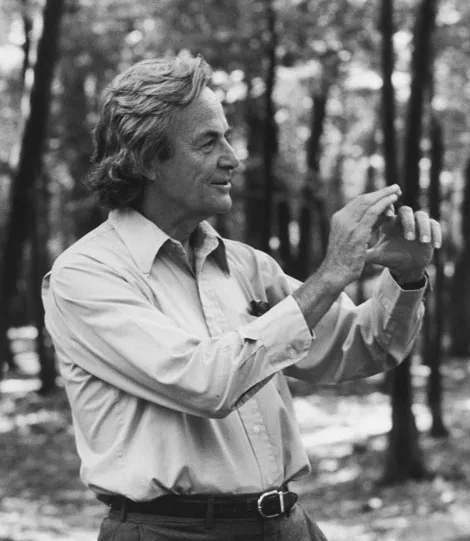
Richard Feynman
Ref:
Wikipedia
Shor's Shock: Quantum Advantage Is Not Limited to Simulating Physics
Integer factoring is computable on a classical computer. Shor's algorithm did not change its computability; it changed the known asymptotic resource scaling by exploiting quantum period finding.
\[\text{same problem}+\text{different physical model of computation}\Rightarrow\text{different complexity}.\]
This makes a stronger claim than “quantum systems simulate quantum systems”: superposition, phase, interference, and entanglement may reorganize the cost of tasks stated in ordinary mathematical language.
Avoid saying that Shor proves all quantum computers are faster. Speedup is problem- and algorithm-dependent, and practical advantage also includes error correction and hardware overhead.
{kind=link}
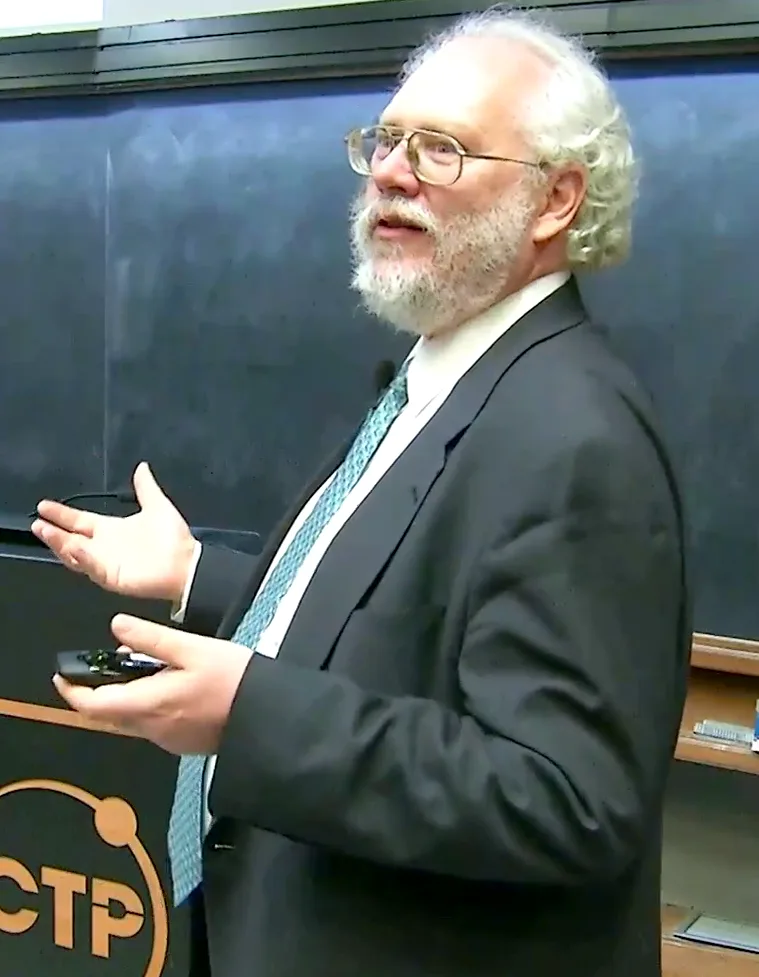
Peter Shor
Ref:
Wikipedia
Why Shor's Algorithm Threatens RSA
RSA begins with two large secret primes, \(p\) and \(q\), and publishes their product:
\[N=pq\]
Multiplying \(p\) and \(q\) is easy. Starting from \(N\) and recovering those factors is believed to be extremely costly on a classical computer.
Once \(p\) and \(q\) are known, the RSA private key can be reconstructed.
Shor's key step: reduce factoring to period finding, which a sufficiently large fault-tolerant quantum computer can perform in polynomial time.
{kind=link}
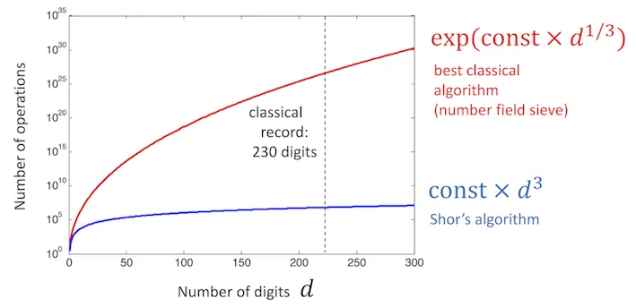
What Does a Qubit Actually Add?
A qubit has state \(\alpha|0\rangle+\beta|1\rangle\), but measurement does not reveal both amplitudes. The useful resource is not “reading all answers at once.” Algorithms arrange relative phases so that later evolution converts them into enhanced or suppressed outcome probabilities.
\[|0\rangle\xrightarrow{H}\frac{|0\rangle+|1\rangle}{\sqrt2}\xrightarrow{Z}\frac{|0\rangle-|1\rangle}{\sqrt2}\xrightarrow{H}|1\rangle.\]
\[\boxed{\text{superposition}+\text{phase control}+\text{interference}+\text{measurement}.}\]
Shor's Algorithm as a Pipeline
- Reduce factoring \(N\) to finding the order \(r\) of \(a\bmod N\).
- Create a coherent superposition of exponents.
- Compute modular exponentiation reversibly.
- Use phase estimation / the quantum Fourier transform to extract information about \(r\).
- Apply continued fractions and classical number theory to recover factors.
The quantum computer does not simply “try every factor.” Its advantage comes from encoding periodic structure into phase and extracting that structure through interference.
The modular-arithmetic circuit, not the textbook QFT diagram alone, dominates much of the logical resource cost.
Q4. Why Must Reversible Computation Meet Quantum Dynamics?
From Boolean Functions to Unitary and Hamiltonian Evolution
From Reversible Logic to Physical Evolution
A reversible classical gate permutes computational-basis states. A quantum gate extends the transformation linearly to arbitrary superpositions. A device must then generate that unitary through a Hamiltonian:
\[i\hbar\frac{d}{dt}|\psi(t)\rangle=H(t)|\psi(t)\rangle,\]
\[U(T,0)=\mathcal T\exp\!\left[-\frac{i}{\hbar}\int_0^T H(t)\,dt\right],\]
\[|\psi(T)\rangle=U(T,0)|\psi(0)\rangle.\]
\[\boxed{\text{Boolean function}\rightarrow\text{reversible embedding}\rightarrow\text{unitary}\rightarrow H(t).}\]
Information Erasure Makes Logic Irreversible
A gate is reversible only when its output identifies one unique input.
{kind=link}
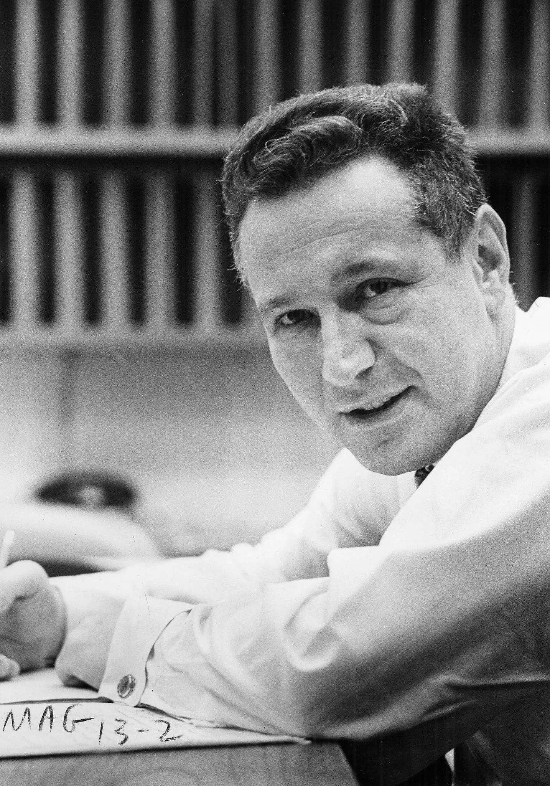
Erasing one unbiased bit requires the environment to receive at least
\[\Delta S_{\mathrm{env}}\ge k_B\ln2\]
\[Q_{\min}\ge k_BT\ln2\]
Half adder: \(01\) and \(10\) both produce \((\mathrm{Carry},\mathrm{Sum})=(0,1)\).
Source: Landauer (1961).
Landauer Bound with Numbers
Resetting an unbiased bit reduces its information entropy by \(k_B\ln2\). In an ideal quasistatic process, the environment must receive at least
\[Q_{\min}=k_BT\ln2.\]
At \(300\,\mathrm K\), \(Q_{\min}\approx2.87\times10^{-21}\,\mathrm J\). Formally, at \(10\,\mathrm{mK}\), it is approximately \(9.57\times10^{-26}\,\mathrm J\).
This is not an estimate of total computer power. Refrigeration, control electronics, attenuation, amplification, finite-time switching, and error correction dominate real systems. Landauer supplies a lower bound for logically irreversible reset under stated assumptions.
{kind=link}
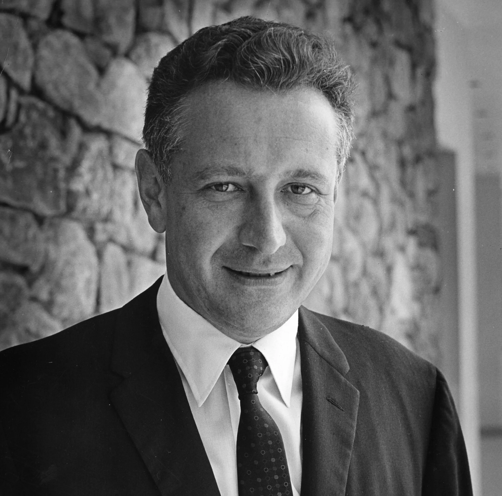
Rolf Landauer
Ref:
Wikimedia Commons
▲
Ref:
https://commons.wikimedia.org/wiki/File:Rolf_Landauer.jpg
Logical and Thermodynamic Reversibility Differ
| Logical reversibility | Thermodynamic reversibility |
|---|---|
| Property of an input-output map | Property of a physical trajectory |
| Input is recoverable from output | Entropy production can approach zero |
| Toffoli is reversible | A fast noisy Toffoli may dissipate strongly |
| Does not specify timing or damping | Depends on protocol, bath, and rate |
Likewise, unitary evolution of a closed system does not imply that an entire quantum computer—including initialization, measurement, reset, and feedback—is dissipation free.
Controlled Gates Preserve Their Inputs
{kind=link}
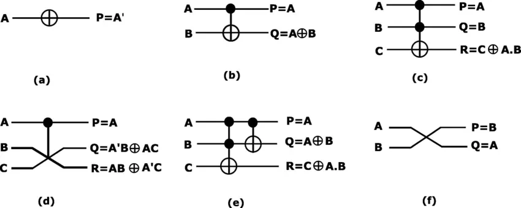
CNOT / controlled-X
\[(a,b)\longmapsto(a,\,b\oplus a).\]
The control bit is retained; the target flips only when \(a=1\).
Toffoli / CCNOT
\[(a,b,c)\longmapsto(a,\,b,\,c\oplus ab).\]
Both controls are retained, so the transformation is one-to-one.
CNOT and Toffoli are their own inverses: applying the same gate twice restores the input.
A Reversible Half Adder Keeps Enough Information
Conventional half adder
| \(A\) | \(B\) | Carry | Sum |
|---|---|---|---|
| 0 | 0 | 0 | 0 |
| 0 | 1 | 0 | 1 |
| 1 | 0 | 0 | 1 |
| 1 | 1 | 1 | 0 |
Inputs \(01\) and \(10\) produce the same output. The two-bit map is not reversible.
Reversible embedding with \(C=0\)
\[(A,B,C)\longmapsto(A,\,C\oplus AB,\,A\oplus B).\]
| \(A\) | \(B\) | \(C\) | \(A'\) | Carry | Sum |
|---|---|---|---|---|---|
| 0 | 0 | 0 | 0 | 0 | 0 |
| 0 | 1 | 0 | 0 | 0 | 1 |
| 1 | 0 | 0 | 1 | 0 | 1 |
| 1 | 1 | 0 | 1 | 1 | 0 |
Keeping \(A\) and adding the initialized wire \(C\) makes every output distinct.
Ancilla Bits Provide Reversible Workspace
{kind=link}
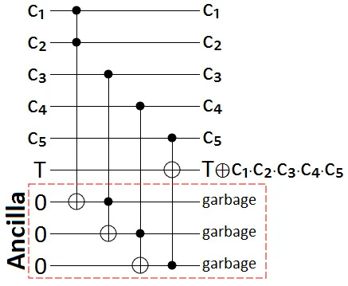
An ancilla is an auxiliary bit or qubit initialized in a known state, usually \(0\) or \(\lvert0\rangle\).
- Use the ancilla to store an intermediate result.
- Use that result to control the desired operation.
- Run the workspace computation backward to restore the ancilla.
\[\lvert x\rangle\lvert0^m\rangle\lvert0\rangle \xrightarrow{\;U\;} \lvert x\rangle\lvert w(x)\rangle\lvert f(x)\rangle \xrightarrow{\;\mathrm{uncompute}\;} \lvert x\rangle\lvert0^m\rangle\lvert f(x)\rangle.\]
Uncomputation prevents leftover “garbage” from remaining correlated with the useful output.
Background: Ancilla bit.
Bennett: Compute, Copy, Uncompute
- Compute: retain intermediate results rather than overwrite them.
- Copy: copy a classical-basis result into a clean output register.
- Uncompute: run the reversible circuit backward to return temporary registers to a standard state.
Uncomputation is essential in quantum algorithms because unused garbage may remain entangled with the desired output and destroy later interference.
{kind=link}
Charles H. Bennett
Ref:
Wikimedia Commons
▲
Ref:
https://commons.wikimedia.org/wiki/File:Dr._Charles_Bennett_IBM_Fellow_(cropped).jpg
Reversibility: Four Ideas to Keep
- Closed microscopic dynamics preserves information.Quantum evolution is unitary and therefore invertible.
- Many-to-one logic discards information.Reset and ordinary Boolean functions generally cannot be inverted from their outputs alone.
- Reversible circuits retain sufficient state.Extra output wires preserve the information required to reconstruct the input.
- Ancillas must be cleaned.Compute, use the result, then uncompute the workspace.
preserve inputs→compute→use or copy the
result→uncompute
Q5. Must Quantum Computation Be Expressed as a Sequence of Gates?
Circuits, Measurements, and Hamiltonian Paths
Gate-Based vs. Adiabatic Quantum Computing
{kind=link}
{kind=link}
Gate-Based Computation: Program as a Circuit
\[|\psi_{\mathrm{out}}\rangle=G_mG_{m-1}\cdots G_1|\psi_{\mathrm{in}}\rangle.\]
The program is a sequence of discrete logical operations. A universal gate set approximates arbitrary target unitaries to a chosen accuracy. It does not imply that all gates cost the same or that hardware provides ideal gate symbols directly.
Primary resources: coherent qubits, accurate one- and two-qubit operations, connectivity, depth, mid-circuit measurement when required, and classical control.
Adiabatic Computation: Program as a Hamiltonian Path
\[H(s)=(1-s)H_{\mathrm{initial}}+sH_{\mathrm{problem}},\qquad 0\le s\le1.\]
The system begins near an easily prepared ground state. The Hamiltonian changes according to (s(t)); sufficiently slow evolution relative to the relevant spectral structure keeps the state near the desired path.
The program is encoded in (H_{\mathrm{problem}}), the interpolation path, and the schedule. Key costs include embedding, the minimum gap, thermal excitation, control error, and total evolution time.
Measurement-Based Computation: Program as an Adaptive Measurement Pattern
Prepare a highly entangled resource state, such as a cluster state, then compute through local measurements:
\[\text{resource state}\rightarrow\text{measurement basis and order}\rightarrow\text{classical feed-forward}\rightarrow\text{logical output}.\]
Measurements consume the resource state and teleport logical information through it. Earlier outcomes determine later measurement bases.
Measurement-based computation can implement logical gates and can be translated to a circuit, but it is not physically “just a gate circuit.” Its native execution primitives are entangled-state preparation, measurement, and feed-forward—especially important in photonic platforms.
Equivalent Power Does Not Mean Equivalent Engineering
| Question | Gate-based | Measurement-based | Adiabatic |
|---|---|---|---|
| Where is the program? | Gate sequence | Graph state and measurement pattern | Hamiltonian path and schedule |
| Primary primitive | Unitary gate | Adaptive local measurement | Continuous evolution |
| Key resource | Coherent controllable qubits | Entangled resource state | Ground-state path and gap |
| Typical failure | Gate error, crosstalk, decoherence | Loss, wrong basis, feed-forward latency | Excitation, small gap, thermal error |
One Problem, Three Program Locations
| Layer | Circuit | Measurement based | Adiabatic |
|---|---|---|---|
| Initial resource | Register state | Entangled graph state | Ground state of \(H_0\) |
| Program | Ordered gates | Angles, order, feed-forward | \(H(s)\) and \(s(t)\) |
| Clock | Gate scheduler | Measurement dependencies | Continuous schedule |
| Readout | Bit-string samples | Measurement record plus Pauli frame | Final energy/configuration samples |
The correct hardware question is not “which diagram looks simpler?” but “which expensive resource has been moved or hidden?”